Without a YouTube video description, audience won’t get cognizant of what real value you can offer. When leveraged to its true potential, video descriptions can boost SEO , subscriptions, view counts, audience retention, engagements and watch time. They can also help your videos rank in YouTube.
They produce specific as well as detailed data points informing YouTube’s artificial intelligence the nature of content that is being watched and what other content it is associated to. YouTube’s main objective is to keep viewers on their platform and consuming content. Hence, descriptions are where the search engine sparkles.
As a video creator, the more data evidences you provide YT, the more it will be able to suggest your videos to your target audience. Moreover, they convey valuable information that helps them understand what they’ll be gaining by watching your creations. Then, it must be crafted in a way that, it can inspire them to subscribe.
As, having a good subscriber base is also a ranking factor of the algorithm, many creators grow their channels by buying YouTube subscribers .
Hence, produce data evidences and YouTube will continue to recommend your content, as more than 70% of what people watch on YT is determined by its recommendation algorithm.
You have landed on the best place, if you too want to know, how to write description for YouTube video?
YouTube is a universal stage for video, with about 122 million daily active users on YT consuming more than a billion hours of video every day, this is one of the most widely used social media platforms (and search engine) in the world.
According to eMarketer, more than 106 million U.S. households are expected to watch streaming content in 2021, eclipsing pay TV.
But the fact is their attention span is minimal. They do not have the amenity of time to see each and every video in your channel. Thanks to your competitors and the ocean of content. They will only click on your videos, if they recognize that it is going to be valuable and if there is any good that they can get from it.
Even the best videos won’t aid you achieve your inbound marketing objectives if they don’t get viewership and engagements. In fact, many creators, buy YouTube comments and buy YouTube likes to boosts engagement on their videos to rank high.
Today we will discuss the best strategies to know how to write a good YouTube video description.
Let me begin by giving you a clear understanding.
Contents
- 1. What is YouTube Video Description?
- 2. Boosts YouTube SEO
- 3. Gives birth to more views and watch-time
- 4. Front-load your first 25 words with most important information
- 5. Include Long-Tail Keywords
- 6. Check out how your description looks
- 7. Tell audiences what to expect
- 8. Engender Curiosity
- 9. Provide real value
- 10. Upload a video schedule
- 11. You can use associated hashtags (#)
What is YouTube Video Description?
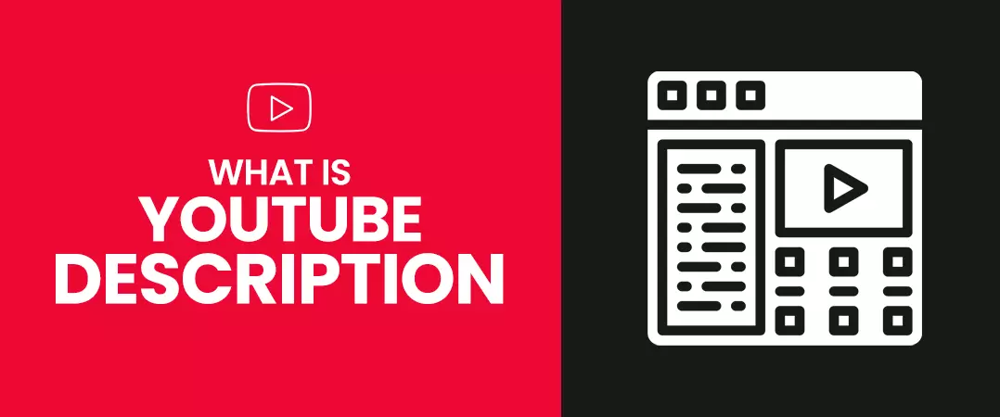
Video Description is a procedure of adding value depiction for a video or channel in textual format through the meta data and optimizing it for search presence.
So, that, the algorithm and the audience can understand the subject of your content. Prodigious YouTube marketing starts with great YouTube descriptions. It benefits viewers find your content and resolve whether to watch it.
Why is YouTube Video Descriptions Important?
1. Boosts YouTube SEO
Many factors play into how your video ranks in the results. YT video descriptions are one of those dynamics. If your video description contains prevalent search terms or their accompanying keywords, it is more likely to appear higher in results and in the sidebar for related/recommended videos.
On average, users spend 18 minutes on YT every day browsing at least eight different pages on the platform. Hence, to gain the potential traffic & reach, you must get your answer, for what should I write in my YouTube description from this blog.
2. Convert potential leads
Most marketers would favour to have traffic head unswervingly to their website rather than to their channel, which is why we suggest it’s categorically significant to have an intermingled strategy, which uses YT to drive traffic to your website.
3. Gives birth to more views and watch-time
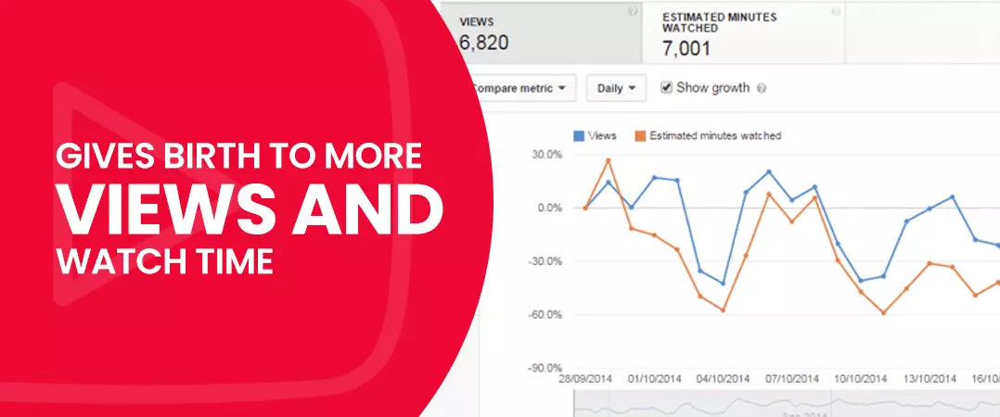
Well-written descriptions with the precise keywords can boost views and watch time because they help your video show up in search results.
“Well-written descriptions with the right keywords can boost views and watch time because they help your video show up in search results.” – Creator Academy. Also, when you include the links of your channel playlists here, you get your watch-time multiplied exponentially.
4. Operative tool of YouTube advertising
You can insert the affiliate links, or product to sale links for brands. Also, this is a great way to drive traffic to your website from your channel.
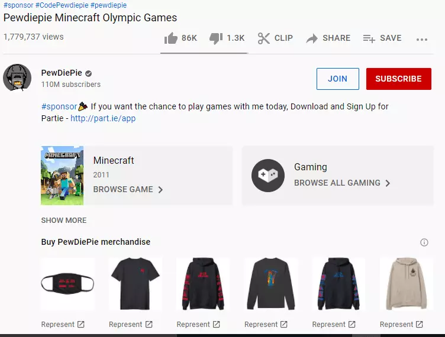
Image source- PewDiePie
Now, your next question probably is, how can I fascinate viewers to click through after reading my description? By optimizing it for search and relevance!
But how do you craft video descriptions that work?
Best Strategies for Writing Effective YouTube Video Descriptions
1. Integrate the power of keywords
In the YouTube video description box, you should include the primary keyword in the first paragraph.
A primary or seed keyword is the main phrase/search term you try to rank for. Preferably, you have this seed keyword previously in mind before shooting the video.
2. Front-load your first 25 words with most important information
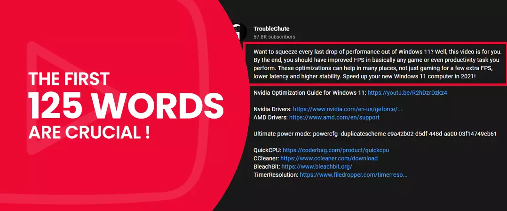
Putting the most essential information first in front of the description, like relevant keywords for the video, is an incredible writing approach used in editorial writing. And then target the less important material such as a short overview of the current video or the related links of channel content. YT provides you 5,000 characters, so make good use of them. But viewers will see the first three lines or the first 200 characters, before the “see more” interruption.
3. Find keywords using YouTube search suggest feature
Just like Google, the YouTube algorithm customs keywords to rank videos in search results. A good way to find perfect keywords/ search terms that your target audience uses to find videos similar to yours on YT is to copiously using YouTube search suggest feature. Just enter a relevant word/phrase and YouTube will provide numerous keywords in the drop-down box.
These recommended searching results are those queries that your real viewers are actually searching for. This is a commanding and consistent feature since YT is the second leading searching site after Google.
You must include, these powerful keywords in your title and description to increase your videos’ discoverability.
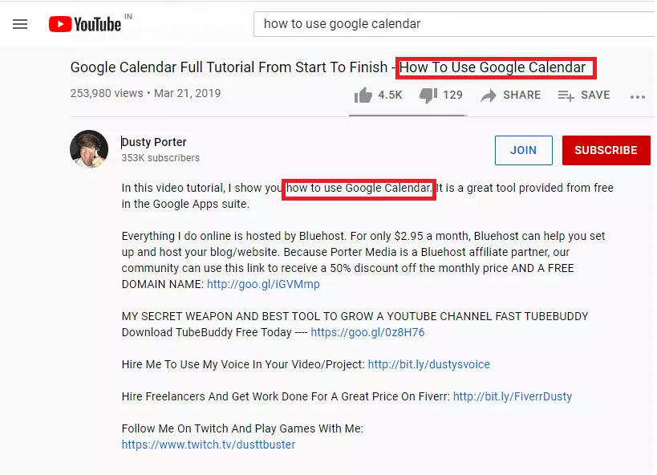
Image source- Dusty Porter
4. Find keywords using Google Trends and Google Ads Keyword Planner
You can identify popular, high search volume and low competition keywords and their synonyms using them. Including these terms can help you maximize traffic from search.
Remember, always avoid irrelevant words or keywords in your description because it creates an underprivileged viewing experience and may violate YT terms of policies.
The same goes for your channel description. YT’s algorithm gives a lot of prominence to the keywords in your About page. Use them intelligently.
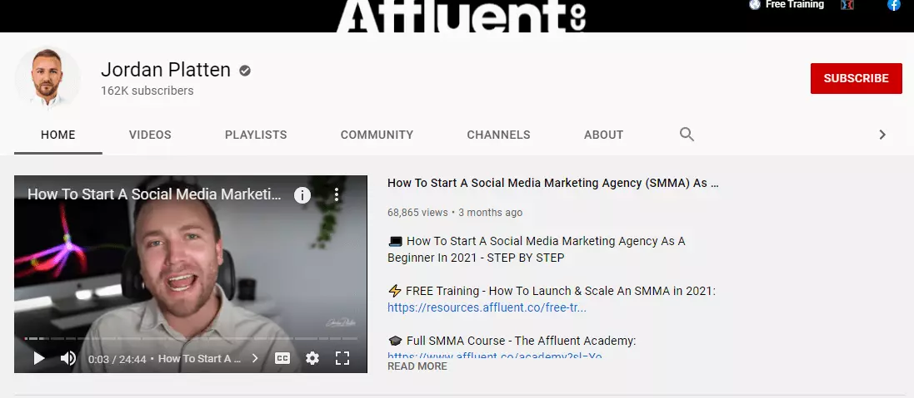
Image source- Jordan Platten
5. Include Long-Tail Keywords
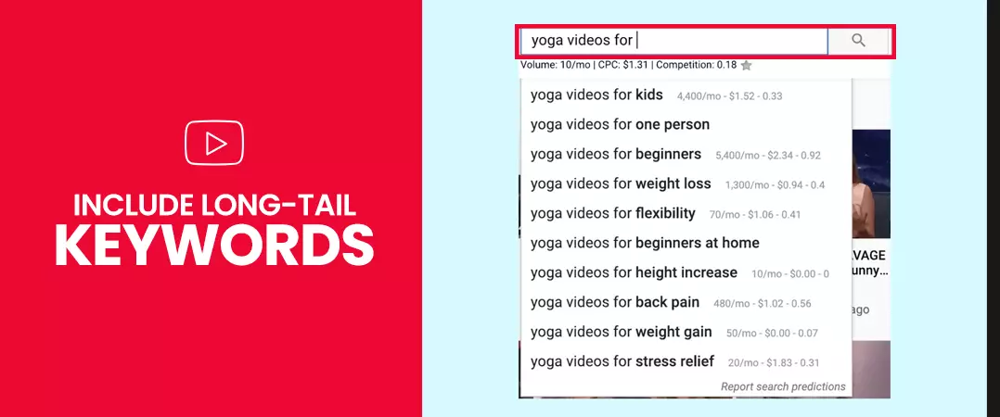
Using relevant & long tail keywords in your video descriptions is important as it directs the specific audience to your videos. By 2025, it’s predicted that 50% of viewers under 32 will not subscribe to the paid TV.
- Use keywords as naturally as conceivable and write your descriptions in an informal language, the way a user will search for analogous content
- Maintain apt keyword density, but don’t overdo it.
6. Repeat them
Reverberation lets YT know a specific term is relevant to your video or channel. Use your keyword two to three times for best outcomes. Any further than three, and it may get signposted as keyword stuffing.
You should also include 3 or 4 substitute accounts of the primary keyword; for example, if your main keyword is “how to use pattern interrupts”, alternates might be “how to add pattern interrupts”, “YouTube pattern interrupts”, etc.
Lastly, include some broad so-called sort keywords to bid context. For this case, your category keywords might be “How to grow a YouTube channel” or “how to get successful on Youtube”.
7. Check out how your description looks
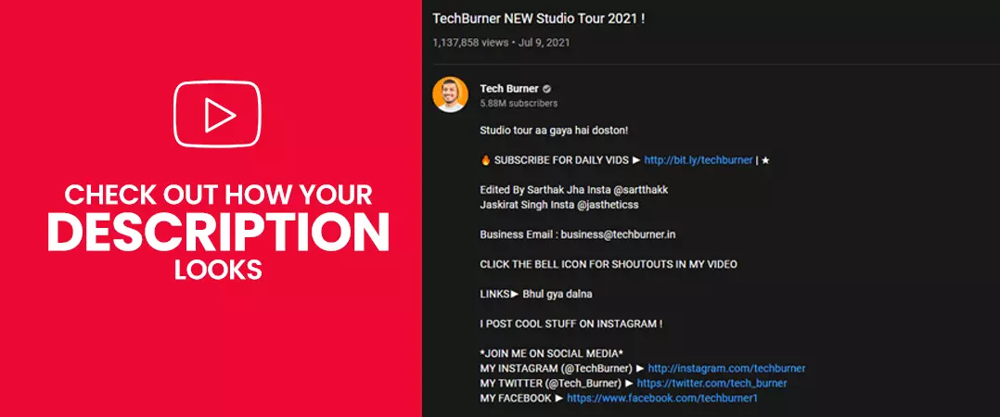
Find out how your description appears on different pages and devices, along with how it performs in Analytics, to study if it’s driving target audience.
- Preview it in search, on the video’s watch page, and on several mobile devices to make sure the most vital information is perceptible.
- Analytics can offer you what keywords lead the target audience to your video. Help your video appear in YouTube search. If any main or chief subjects of your video don't appear in your search report, it may be because you certainly not added those words in your description. Pretend you're probing for your video: what would you insert into the search bar? Those search terms should be in the description.
8. Link to more info
You must share links to your website, your social media profiles, and supplementary information. You can link to your channel trailer or some of your superlative preliminary content. Do you remark any tools, blog posts, or products in your video? Link to them in your video descriptions so watchers can find them easily.
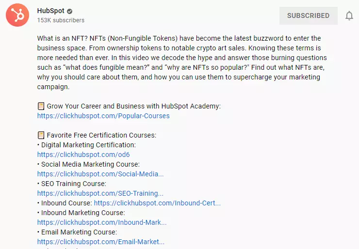
Image source-HubSpot
9. Promote Your Other creations
YouTube’s video description box has more than enough space to compose everything about your video and other creations as well. You can use this spare space to encourage other relevant videos’ viewership or other applicable resources to your audience.
Many YouTubers use their video descriptions to share the link of other interrelated videos or other beneficial resources. Check out this description of a video by Ahrefs, as a YouTube video description example.
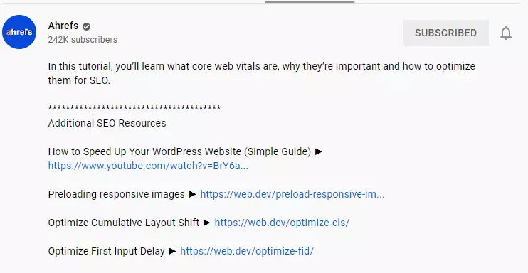
Image source-- Ahrefs
They have added links for other applicable videos, encouraging viewers to check those out as well.
10. Tell audiences what to expect
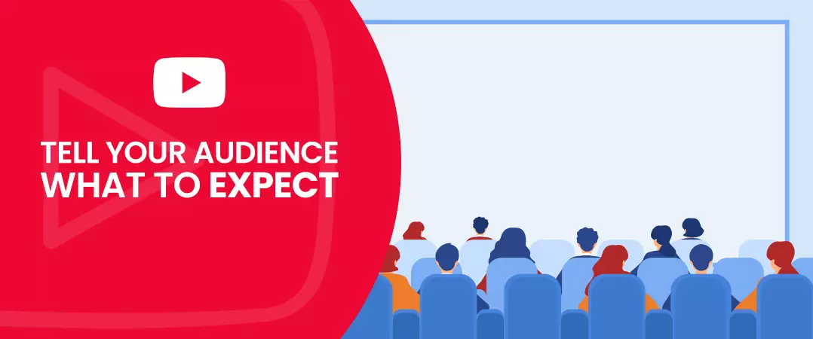
Your video descriptions should be completely on point when it comes to enlightening what the video is about. A lot of times, onlookers read the first line of description to resolve whether the video is even relevant to them or not.
So, it is imperative to provide a crunchy description of the video content. But if you misrepresent your videos, they will stop watching them halfway through. This will hurt your search rankings as well as your standing.
11. Engender Curiosity
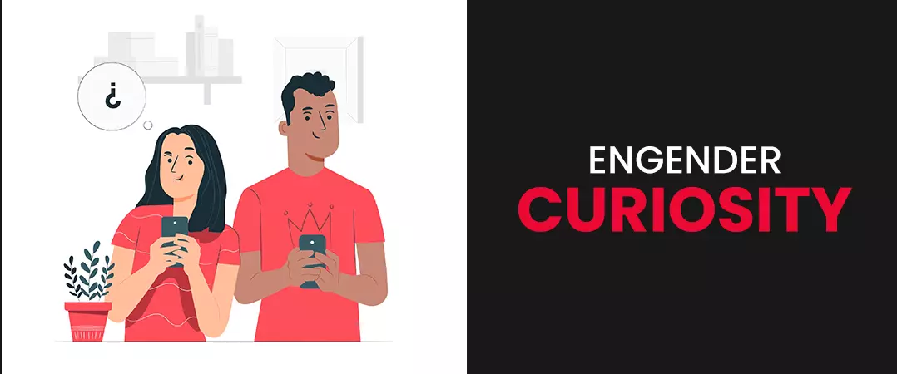
You should not disclose the whole shebang in the description and leave some stuffs for them to discover when they watch the video.
Generating inquisitiveness in handlers by indicating to the fact that there’s more to be found essentially encourages them to watch your video. If you provide all the essentials in the description itself, there won’t be a necessity for them to watch the video.
12. Optimize for click-through-rate
Target for clickable descriptions that resolve actual problems. Seventy percent of millennial YouTubers use videos to learn new-fangled things. Keep this in mind each time you write.
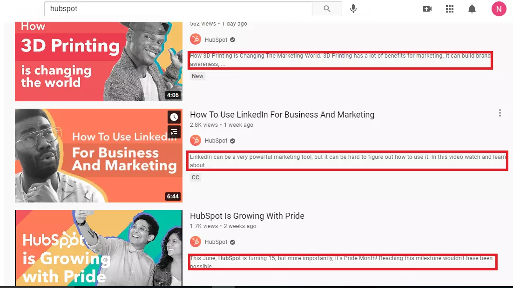
Image source- HubSpot
13. Provide real value
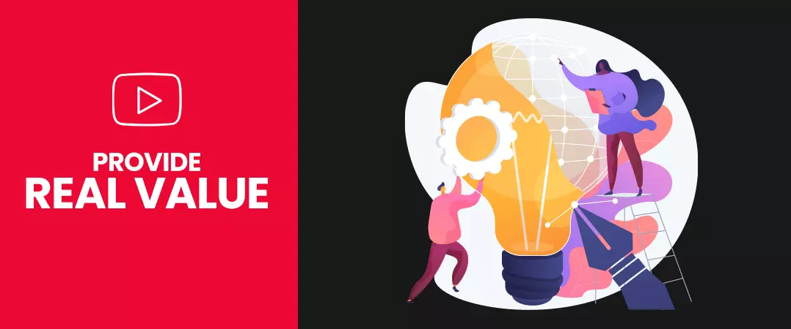
Target foAlways embrace a palpable value proposition in your descriptions. Why should somebody subscribe to your channel? How will your video profit them? There are perceptibly a lot of videos on YouTube previously, on almost every theme. Does yours have a cause to be? If yes, why? What is the value proposition of viewing the video? Is it to entertain, inform? Cultivate a buyer’s persona before you create the video that will help support its creation and eventual description and preferment.
14. Incorporate humour
The YouTube video description box can only show text, but it doesn’t have to be a tedious experience. You can augment interactive topographies that could help increase views, highlight collaborations, and grow your channel. You can also provide links to playlists of related videos.
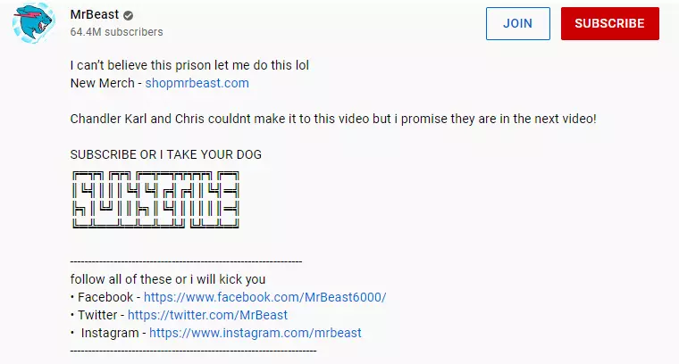
Image source- Mr. Beast
15. Upload a video schedule
Represent your schedule to express your subscribers when to come back and what the next video is about. You can make a comprehensive memo, and upload a weekly video schedule.
Or you can inform them your unvarying video schedule in few sentences like ‘come for more on every Monday and Saturday’ and ‘turn on the subscribe button so that you won’t miss them’. Nevertheless, make sure your schedule is achievable because it’s essential to stay regular in video production.
16. Include call-to-action
Ask the description oglers to take action after viewing attracting data that they have interests in. Call-to-action is the latter part of a channel description but the central phase to scrutinize whether your description works or not. Prompting viewers to subscribe to your channel and turn on the notifications is a perfect epoch for a channel description. Here and now, you’ve grew the viewer’s consideration, leverage it!
Image source- Backlinko
The best YouTube calls-to-action are strong, urgent, and show an understandable assistance to the viewer. Done right, they can increase engagement, subscriptions, and more.
17. Use Time stamps
If your video is lengthy or you would like to lure the user to a definite segment of you video, then timestamps can be an actually adaptable mechanism to make engaging your content calmer.
Image source- Davie Fogarty
18. Use http:// or https://
Your video description is one of the best area YouTube lets you link out. Habit it! Reminisce to add “http://” to all URLs to make them clickable.
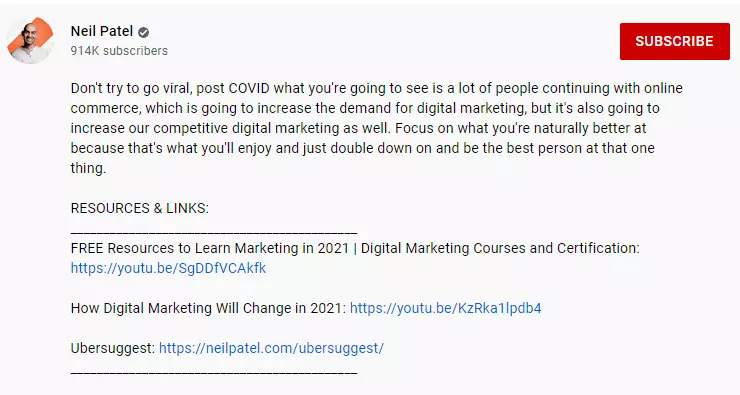
Image source- Neil Patel
19. You can use associated hashtags (#)
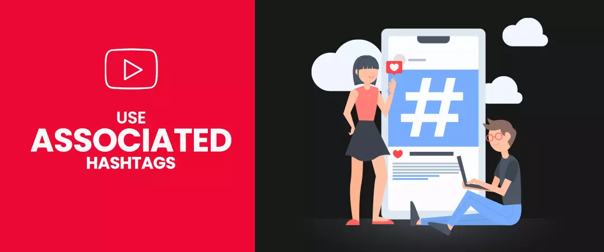
You must harness the related hashtags in your video descriptions to help viewers find your video when they search for a specific hashtag.
When you upload a video, you can include hashtags, in your video’s title or description. Hashtags in the video description are links that viewer can click on to go to that hashtag's search results page to see more similar videos on that theme.
- Add hashtags in crucial parts of your description to help audiences find your video.
- Safeguard that you only use hashtags linked to your video. For example, if you upload a review of a specific book do not add hashtags related to different or unrelated popular chefs, actors or unrelated topics to misleadingly increase views.
- Never saturate your description section with hashtags. YT will remove all hashtags on a video if it has more than 15 hashtags.
- Hashtags are particularly great to use with trending content, such as upcoming events or folks in the news. This confirms that viewers looking for videos about the trending topic will find a variability of germane content.
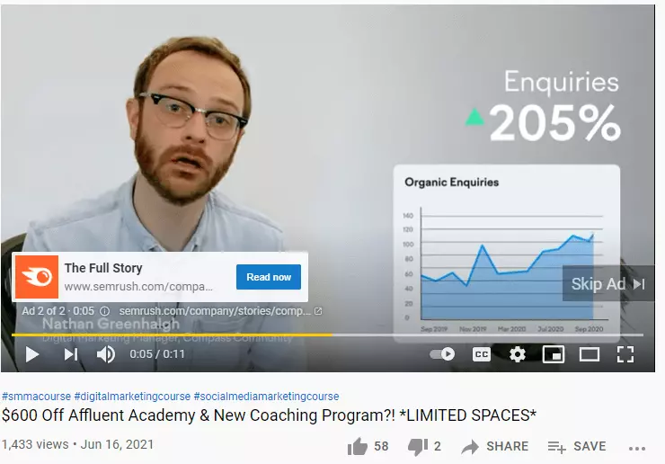
Image source- Jordan Platten
I hope you found this as a useful guide to know, how to write a good YouTube video description?
Feel free to be creative! Feel free to share!